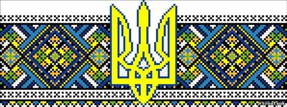

І жах, і кров, і смерть, і відчай, І клекіт хижої орди, Маленький сірий чоловічок Накоїв чорної біди.

Це звір огидної породи, Лох-Несс холодної Неви. Куди ж ви дивитесь, народи?! Сьогодні ми, а завтра – ви.